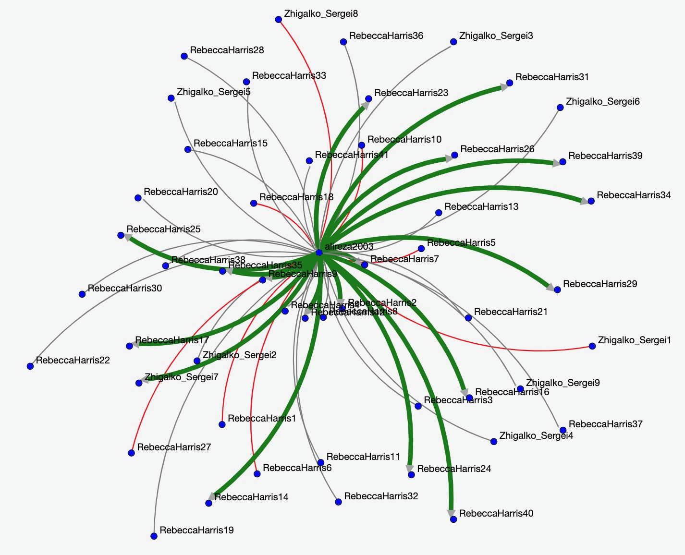

Chess Matchups
Goals
The purpose of this assignment is to learn to
- Use chess matchup dataset (from Lichess.org)
- Determine how many games Alireza2003 (the number one player on Lichess.org) won/lost/drew out of his last 50.
- Use BRIDGES to visualize solution
Assignment Tasks
- Use the Game class to access games json
- Add a vertex for each unique username
- Add an edge between Alireza2003 and every other vertex
- Color edges depending on game outcome, if Alireza2003 won the edge is green, if he lost the edge is red, if the game was a draw the edge is grey
- OPTIONAL: Color each vertex to reflect their piece color in the game (e.g. If RebeccaHarris1 played as the white pieces, color their vertex to be white)
- Visualize
Expected Output:

Help
For C++
GraphAdjList
For Java
GraphAdjListSimple
For Python
GraphAdjList